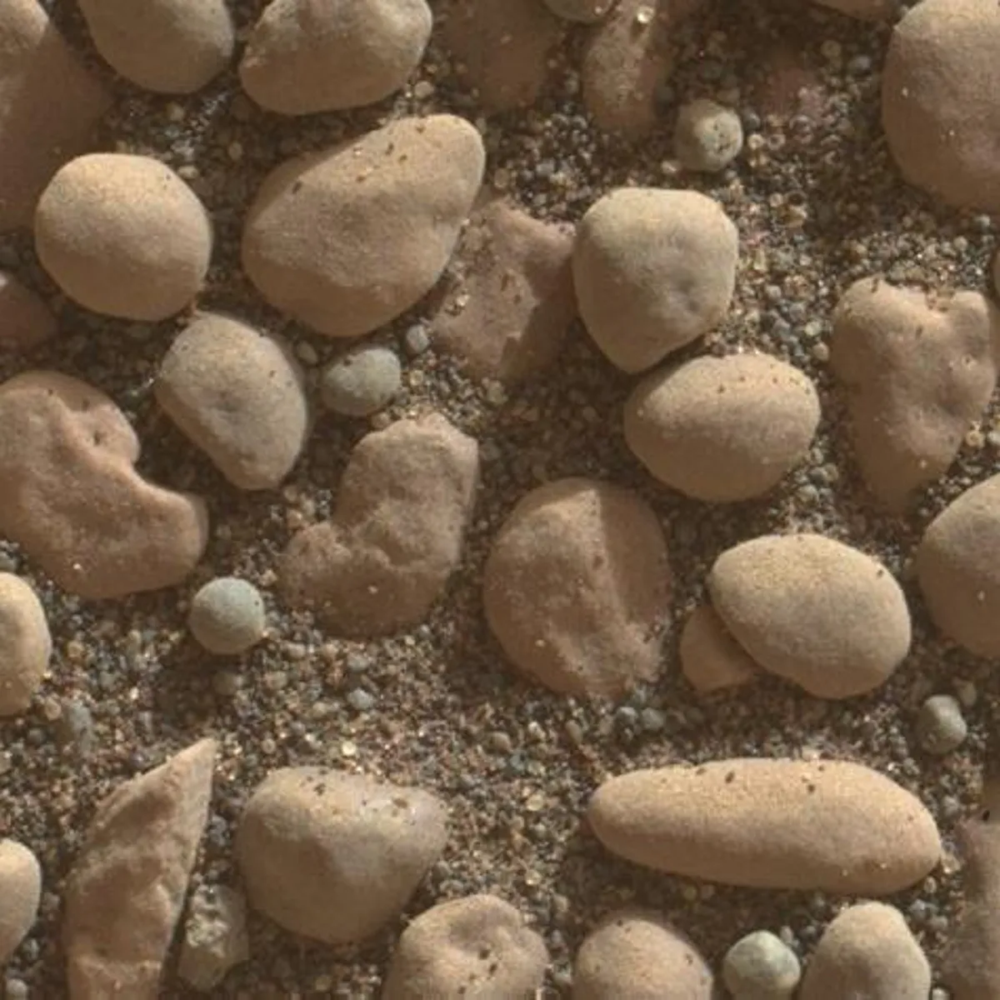
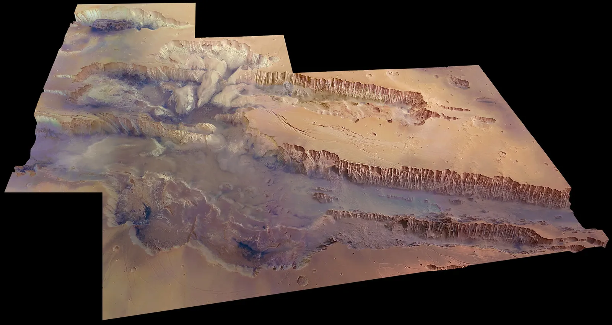
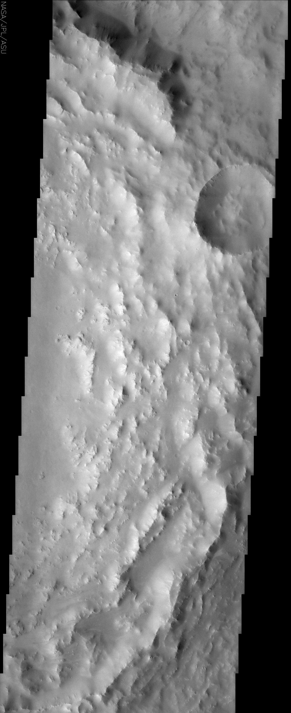
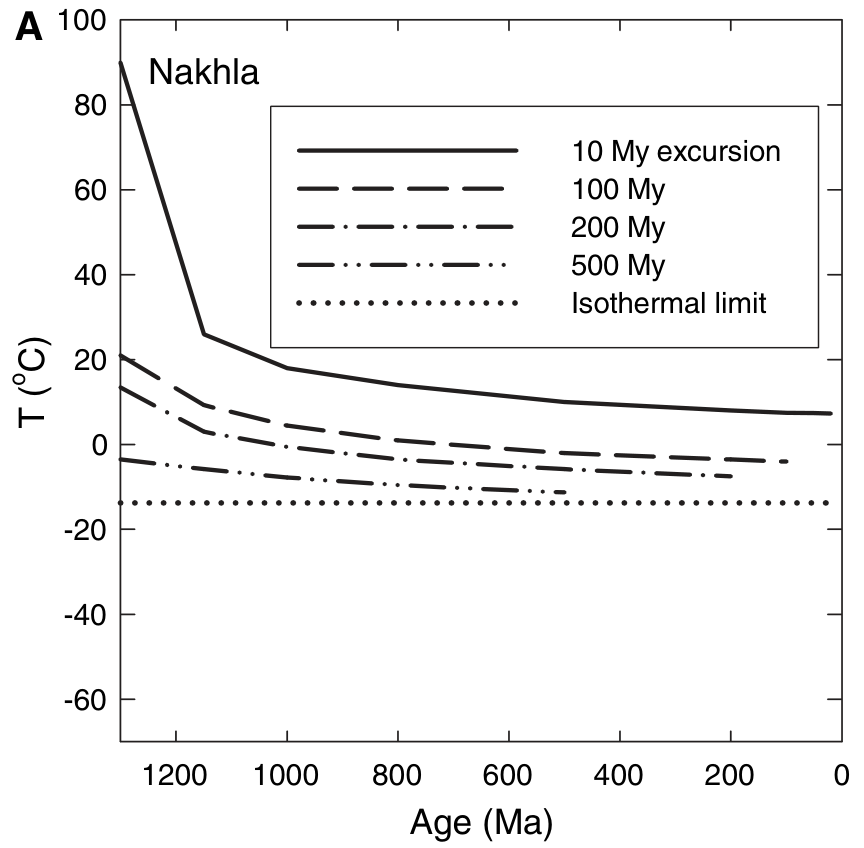

challenging the geologists' cold mars history
with bayesian diffusion models



Cameras tell us Mars was warm for hundreds of millions of years. Rocks tell us Mars was barely ever warm.
The cameras hint at existence of ancient water via erosion. Mars's atmosphere is known to have been thin for the last billion years since we see a consistent history of tiny meteorite craters (they would've burned up before impact if the atmosphere were thicker). So smooth pebbles and canyons are unmistakable signs of liquid water, but they're not strong bounds on how long Mars could've had liquid water. For example, the Grand Canyon on Earth only took 5ish million years to carve.

Martian craters give us one high lower bound around at least 100 million warm years (above 0°C). Imagine old and young meteorite craters. If there were one big ancient deluge, then no old craters would exist, and all young craters would have sharp lips. If there were one big recent deluge, then we wouldn't see craters at all. But if there were slow water erosion over eons, we'd see lots of craters with varying levels of lip smoothness. That's exactly what we see, with a total duration of at least 100My.

Using some clever forensics, geologists can repurpose silicates like feldspars into time-traveling thermometers. We have feldspars from Mars called Nakhlites, and a 2005 study by Shuster & Weiss (surprisingly) indicates that Mars could not have been warmer than 0°C for more than 10M years in the last billion.
Berkeley geochronologist Jack Carter and I suspected that the 21-year-old Shuster et al result is an overconfident point estimate (understandable since MCMC methods are essentially unusable without modern GPUs), so I pointed an 8xH100 cluster at reviving this problem with modern gradient-based MCMC samplers. I think that Mars could've been above freezing for 10x as long as we previously thought. Maybe not long enough for interesting astrobiology implications, but definitely long enough that canyons and smooth pebbles and craters lips are no longer confusing.
how to use a rock as a time-traveling thermometer
who pumped argon into martian rocks?
Potassium-40 is radioactive. Most of it decays toward calcium, but another branch produces argon-40. A feldspar that formed with potassium therefore contains a source of radiogenic argon inside its own crystal lattice.
The potassium population decreases exponentially. If the daughter argon remains in the mineral, the parent-to-daughter ratio records elapsed time. The useful clock was not pumped into the rock from outside; radioactive decay has been producing it in place.
how to date a feldspar
In an argon step-heating experiment, the laboratory raises a feldspar's temperature in stages and measures the argon released at each stage. The measured ratio of radiogenic argon-40 to potassium-derived argon-39 can be converted into an age.
A feldspar grain need not behave as one container. Multi-domain diffusion represents the sample as a mixture of domains with different effective diffusion lengths. Small or fast domains release argon earlier; large or retentive domains release it later.
The shape of the release schedule constrains the effective diffusion parameters and volume fractions. Those parameters describe how the sample behaves during heating; they are not automatically a literal inventory of physical grain diameters.
warmth siphons argon out of the rocks
Argon moves through feldspar by diffusion. Heating increases the diffusion coefficient and lets argon leave the crystal; cooling suppresses diffusion and preserves it. The temperature sensitivity enters through an Arrhenius relationship.
Closure temperature is useful shorthand for the transition between loss and retention, but it is not one fixed material constant. It depends on the activation energy, the effective diffusion length, and the cooling history. A measured age is therefore also evidence about which temperatures the feldspar survived.
augmenting shuster et al with modern computational bayesian models
shuster et al's 2-spike model
Shuster et al represented the domain distribution with two components: a low-retentivity domain and a high-retentivity domain. In distribution notation, this is a pair of point masses.
This was computationally practical in 2005. It also restricts the ways the model can explain the release data. If the effective-domain distribution is broader or differently shaped, a two-point approximation can understate uncertainty in the most retentive material.
the full posterior via NUTS
Bayesian inference treats the diffusion parameters as uncertain. The posterior combines the likelihood from the step-heating experiment with prior information about plausible parameter values.
The likelihood compares each simulated release schedule with the measured one. NUTS uses gradients of the posterior density to explore the parameter space more efficiently than a random-walk sampler.
I used BlackJAX NUTS on eight H100 GPUs, with many chains exploring the diffusion lengths and volume fractions. Each retained sample implies a possible domain model and, downstream, a possible temperature constraint.

was Mars warm?
For every posterior sample, I computed the highest constant temperature that would produce no more than 1% argon loss over several possible warm-episode durations. The collection of those temperatures gives a posterior interval instead of one threshold.
For a 100-million-year episode, the median is −12.7°C and the 95% interval is [−21.1, 42.0]°C in the tracked 1,000-chain run. The upper interval crosses 0°C. This does not show that Mars remained warm; it shows that this posterior does not rule out a warm episode as sharply as the two-domain point interpretation did.
The analysis lives in martiandating ↗, the animation source in geochronology ↗, and the working references are Shuster & Weiss, Science (2005) ↗, and Lovera, Richter & Harrison, JGR (1989) ↗.